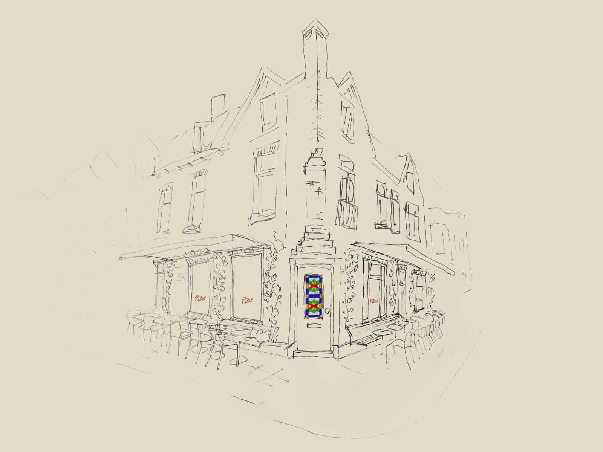

Groepen
Voor groepsreserveringen kunt u contact opnemen via info@pitotutrecht.nl. Het Balagan menu is er voor gezelschappen vanaf 2 personen.
Vleutenseweg 95, Utrecht
Zuurdesem flatbreads, mezze om te delen, kleine gerechten en een glas wijn erbij. Aan de Vleutenseweg in Utrecht.

Kun je niet kiezen? Snappen we! Dit menu bestaat uit een selectie van koude en warme vis-, vlees- en vega gerechten, zuurdesem flatbread en een dessert. Onze favorieten ;)
Vanaf 2 personen.
Bel ons voor een tafel, of stuur een mail. Met een groep? Mail dan even vooraf, dan kijken we samen wat kan.
Voor groepsreserveringen kunt u contact opnemen via info@pitotutrecht.nl. Het Balagan menu is er voor gezelschappen vanaf 2 personen.
Iemand trakteren op een avond Pitot? Er zijn giftcards van Pitot. Mail ons en we helpen je verder.
Giftcard aanvragenWerk je graag in de bediening en krijg je energie van een volle zaak, mooie wijnen, leuke gesprekken en blije gasten? Of hoor je juist thuis in de keuken, waar je samen met het team met aandacht en plezier verfijnde gerechten maakt?
We zoeken onder andere: sommelier, bedieningsmedewerkers, (hulp)koks, souschefs en afwassers.
Denk jij dat Pitot bij jou past (en jij bij ons)? Stuur een mail met een korte introductie van jezelf en je ervaring. Wie weet drinken we binnenkort samen een kop koffie.
Mail je introductie| maandag | 17:00 – 23:00 |
|---|---|
| dinsdag | 17:00 – 23:00 |
| woensdag | 12:00 – 23:00 |
| donderdag | 12:00 – 23:00 |
| vrijdag | 12:00 – 23:00 |
| zaterdag | 12:00 – 23:00 |
| zondag | 12:00 – 23:00 |